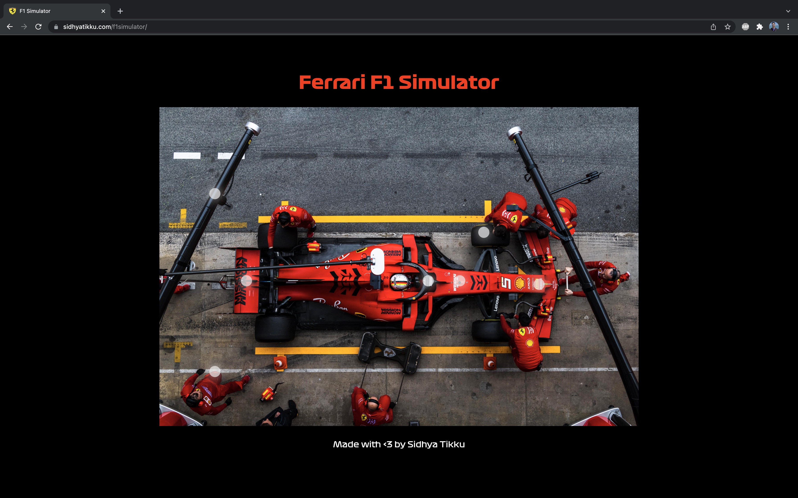

Scuderia Ferrari Experience
This project was made for my Interaction Design class at Parsons during the Fall 2021 semester. The prompt was to create an interactive toy which is not a game. This project allows the users to view Scuderia Ferrari and Sebastian Vettel's 2020 SF1000 Formula 1 car. This project was primarily made using HTML, CSS, and JavaScript.
Ideation
The initial idea behind the interactive experience came whilst I was watching the Mexican GP. The idea was "What if I could control what car I'm watching and the camera angle on car?", just like controlling the camera view and angle in a third-person game. The idea further expanded to providing an VR-like 360° F1 viewing experience in which audience at home can wear their VR headsets and control the viewing angles based on their preferences. The user can select a first-person driver view, bird's eye view, paddock view, or even a grand stand view.
This idea can be applied to other motorsports and sports around the world. There may be a time where people prefer to stay home and watch the game on their VR headsets, 5000KM across the world.
This idea can be applied to other motorsports and sports around the world. There may be a time where people prefer to stay home and watch the game on their VR headsets, 5000KM across the world.

Execution
Based on my limit coding skills and knowledge, it was difficult for me to code an interactive video element like my initial idea. Instead, I'm using images and audios to provide different camera angles, sounds, and stories. These images and audio clips are sourced from the internet and I don't own them. I am also using the official F1 typeface on this project.

Using HTML, CSS, and JavaScript, I was able to code this interactive experience. The user has to click on the touch hotspots and then using JavaScript, the background image changes and plays an audio clip. The user can go back to the main image by pressing the back button and continue to interact with the F1 car, with different camera angles and audio clips. The buttons also changes opacity on:hover.
If I acquire the required coding skills and knowledge, I will code it based on the initial idea, to provide a "360° video-like" viewing experience. The code of this project is publicly available on GitHub and the project is hosted on the internet using GitHub Pages.
If I acquire the required coding skills and knowledge, I will code it based on the initial idea, to provide a "360° video-like" viewing experience. The code of this project is publicly available on GitHub and the project is hosted on the internet using GitHub Pages.